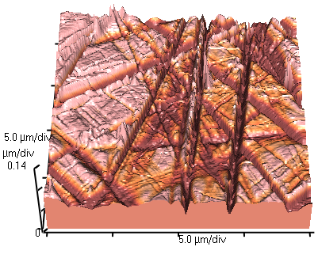

Map the invisible surface.
Learn STM, AFM, tunnelling, force, and nanoscale topography.
Explore scanning probe learning path
Learn STM, AFM, tunnelling, force, and nanoscale topography.
Explore scanning probe learning pathLinear demonstration: Δz = deffV, with deff = 0.2 nm/V. This is an invented effective scanner coefficient, not a PZT material specification. Motion is exaggerated.
Click the tube, electrodes or stage to trace how voltage becomes motion.
For the inverse effect, Sij = dkijEk: S is dimensionless strain, d is a piezoelectric coefficient (m/V), and E is electric field (V/m). For a simple uniformly strained actuator, ΔL = SL; real tube displacement also depends on wall thickness, length and electrode geometry. The direct effect contributes Di = dijkσjk, with electric displacement D in C/m² and stress σ in Pa.
Hysteresis, creep, thermal drift and axis coupling prevent voltage from being an exact position ruler. Calibrated scanners and position sensors help. Neither lateral precision nor high Z sensitivity guarantees an artefact-free image.
Click the tip, sample or current-control loop. The tip motion and gap follow the selected scan mode.
g = z − h(x) is the tip–surface gap in nm; g₀ = 0.50 nm, φ = 4 eV (converted to joules), κ is converted to nm⁻¹. I₀ is the reference current at g₀ under the same fixed nonzero bias and density of states. This uses the same current function as the existing STM instrument. Increasing g by 0.10 nm reduces current to about 13% in this barrier model.
Constant height fixes z = 0.65 nm. Constant current uses G = 0.35 with eight discrete feedback corrections per 1 nm scan step, then records z − g₀. The logarithmic current error drives height without supplying the true surface to the controller. Its residual error illustrates finite settling; controller steps have no calibrated physical time. Surface h(x) = 0.04 sin(2πx/40) + 0.08 exp[−((x−55)/9)²], with x and h in nm.
No electronic heterogeneity, noise, tip convolution or crash mechanics are simulated. A real feedback image follows a constant-current contour affected by local electronic states and bias. Insulating contamination can prevent tunnelling and cause approach feedback to crash the tip.
STM detects a tunnelling current between a conducting tip and sample, not optical light. The repeated bright pattern carries atomic-scale electronic information.
Try STM feedback and tunnelling ↑ · Explore the clickable tip and feedback diagram ↑
With feedback off, I(x,y) changes as the tip scans at fixed height. With feedback on, the controller varies z(x,y) to keep current near a setpoint. The latter follows an electronic as well as geometric contour. Our fixed-electronic-structure experiment isolates gap dependence; this real image includes electronic contrast that the teaching model does not reproduce.
Click the laser, cantilever, detector or controller. In static mode the lever bends with F/k; dynamic mode shows a prescribed oscillation instead.
r is separation in nm; ε = 0.01 nN·nm, σ = 0.30 nm and k = 10 N/m. Positive force points away from the sample (repulsion); negative force is attractive. This Lennard-Jones-type curve illustrates two regimes, not a calibrated macroscopic tip/contact law. The zero-force separation is 21/6σ ≈ 0.337 nm. Geometry is exaggerated and r is directly prescribed, rather than solved from scanner displacement and cantilever equilibrium.
A normalized photodiode difference S = (Iupper − Ilower)/(Iupper + Ilower) measures beam shift. Converting S to δ requires optical-lever calibration; converting δ to force requires k. The diagram shows the response qualitatively, not a ray trace. Adhesion hysteresis, snap-in, capillary forces, indentation and tip shape are omitted.
f₀ is frequency in Hz, k in N/m, effective mass meff in kg and damping γ in kg/s. ω = 2πf is angular frequency in rad/s. The frequency-shift expression assumes a weak, conservative gradient and small motion, with positive r away from the surface; finite-amplitude AFM samples the interaction over an oscillation cycle.
Here the dynamic comparison prescribes r(t) = r̄ + A cos θ: A = 0.03 nm for the non-contact illustration and 0.18 nm for tapping, displayed as a slow two-second cycle. These small teaching amplitudes are not instrument settings. The force is evaluated along that path; we do not solve the oscillator equation or predict amplitude reduction, frequency shift or phase quantitatively. Distance ranges keep this illustrative motion within the plotted force range.
Contact feedback uses static deflection. AM tapping compares measured amplitude with its setpoint; intermittent repulsive interactions can change amplitude and dissipate energy. FM non-contact tracks resonance-frequency changes and may have a separate amplitude-control loop. Phase images measure the lag between drive and response: contrast can reflect dissipation, elasticity, adhesion and operating conditions, so phase is not a unique material label or direct modulus map.

AFM senses probe–sample interactions. In contact-mode height imaging, feedback adjusts Z to maintain a deflection setpoint. The recorded height describes the surface under those operating conditions.
Try AFM forces and detection ↑ · Explore laser, cantilever and photodiode ↑
Select a labelled component below the profiles. Original ideal geometric schematic, not measured data or a new simulation.
Select the true surface, tip or measured profile.
Try the existing tip-broadening experiment ↗ (new tab; choose Scanning probes).
| Technique / signal | What can it reveal? | What must you account for? |
|---|---|---|
| Conductive AFM Contact current at applied bias | Local transport paths, leakage and electrical heterogeneity while deflection feedback tracks topography. | Tip contact area, contact resistance, coatings, force and bias affect current. It is not a direct conductivity map without a transport model. |
| LFM Cantilever torsion / lateral deflection | Friction and local tribological differences; compare trace and retrace. | Surface slopes mix with friction contrast. Torsional calibration, load and scan direction matter. |
| MFM Magnetic force-gradient response | Magnetic texture using a magnetized tip, often at lift height; frequency or phase shifts are detected. | Electrostatic forces and topography can contaminate contrast. Tip magnetization can perturb the sample; it does not directly measure local magnetization. |
| SThM Thermocouple voltage or probe resistance / heat flow | Thermal hot spots, temperature variations or local heat transport. | Thermal contact resistance, heat spreading and probe calibration matter. Temperature and conductivity require different operating/calibration models. |
In MFM, a magnetic tip first follows topography and may retrace at a larger height to reduce short-range interactions. Dynamic contrast depends on the vertical derivative of tip–sample force. For a fixed magnetic dipole mz, Fz ≈ mz ∂Bz/∂z; frequency shift then involves ∂Fz/∂z, hence a second field derivative in that model. Real tips have extended magnetization. Lift mode reduces some crosstalk but does not guarantee a purely magnetic image.
This lesson follows the supplied Lecture 6 file on scanning probe microscopy. The interactive traces are calculated teaching data. Neither atomic resolution nor quantitative force accuracy is guaranteed by these models.
Compare the true and measured AFM profile, or change the STM gap to inspect the exponential current response.